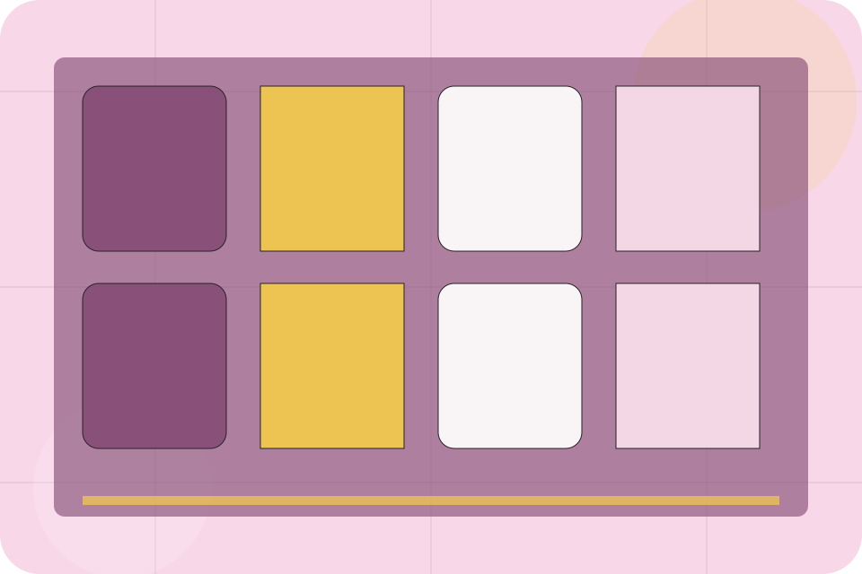
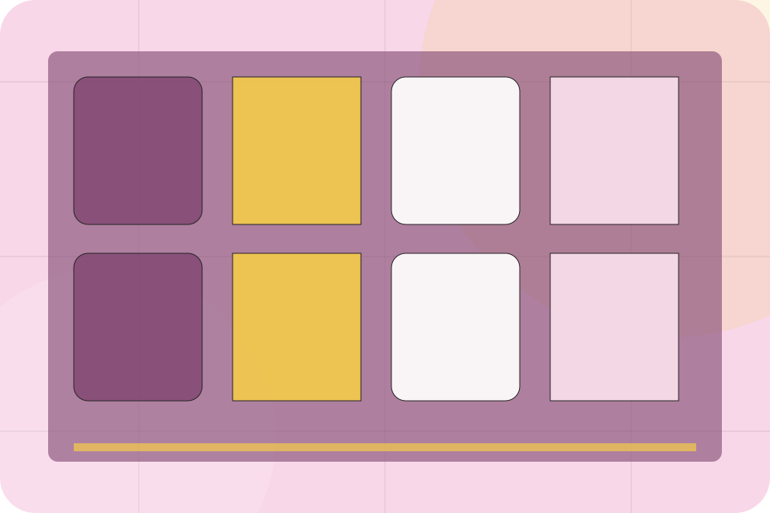
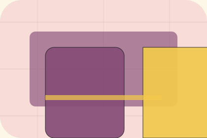

Contact / 01
Contact by Table
Contact shaped for restaurants, cafes & food service decisions.
Contact opens as a clear restaurants decision hub: what Table offers, who it helps, why it matters, and which route to take first.
The first screen combines positioning, proof, primary action, and fast internal navigation, so people can act immediately or compare the rest of the contact route with context.
Check availabilityPlan the visitReserve with context

Contact / 02
Send the right details
Address makes the contact path concrete: what to send, how the response works, and what Table needs before visitors reserve a table.
The section reduces contact friction by naming the channel, expected detail, privacy path, and response expectation instead of dropping visitors into a generic form.
Reserve TableContact / 03
Send the right details
Hours makes the contact path concrete: what to send, how the response works, and what Table needs before visitors reserve a table.
The section reduces contact friction by naming the channel, expected detail, privacy path, and response expectation instead of dropping visitors into a generic form.
Reserve TableDetails
What information helps Table respond with a useful answer instead of a generic reply.
Timing
How the visitor should think about response, urgency, location, or availability.
Reply
The expected next message keeps scope, timing, and the first practical step clear.
Contact / 04
Send the right details
Phone makes the contact path concrete: what to send, how the response works, and what Table needs before visitors reserve a table.
The section reduces contact friction by naming the channel, expected detail, privacy path, and response expectation instead of dropping visitors into a generic form.
Reserve TableDetails
What information helps Table respond with a useful answer instead of a generic reply.
Timing
How the visitor should think about response, urgency, location, or availability.
Reply
The expected next message keeps scope, timing, and the first practical step clear.
Contact / 05
Send the right details
WhatsApp makes the contact path concrete: what to send, how the response works, and what Table needs before visitors reserve a table.
The section reduces contact friction by naming the channel, expected detail, privacy path, and response expectation instead of dropping visitors into a generic form.
Reserve TableContact / 06
Send the right details
Map makes the contact path concrete: what to send, how the response works, and what Table needs before visitors reserve a table.
The section reduces contact friction by naming the channel, expected detail, privacy path, and response expectation instead of dropping visitors into a generic form.
Reserve TableContact / 07
Send the right details
Transport makes the contact path concrete: what to send, how the response works, and what Table needs before visitors reserve a table.
The section reduces contact friction by naming the channel, expected detail, privacy path, and response expectation instead of dropping visitors into a generic form.
Reserve TableContact / 09
Send the right details
Reserve makes the contact path concrete: what to send, how the response works, and what Table needs before visitors reserve a table.
The section reduces contact friction by naming the channel, expected detail, privacy path, and response expectation instead of dropping visitors into a generic form.
Reserve TableContact / 10
Reserve Table
Table closes the contact route with a clear action, a quick reminder of the value, and a low-friction way to reserve a table.
Visitors who are ready can use the primary action. Visitors who are still comparing can scan the section links, proof, and support routes before they reserve a table.
Reserve TableThe final block keeps the choice simple: act now, compare one more proof route, or send enough detail for a focused response.
Reserve Table
desire and social confidence
Reserve Table
A sensory restaurant site with pastel stage surfaces, menu cards, room-gallery rhythm, and booking CTAs. Contact ends with a direct path to reserve a table, plus enough context for visitors who still need to compare.

Reserve TableImportant notes before you act
Menus, allergens, prices, and availability must be confirmed by the venue before ordering or booking.